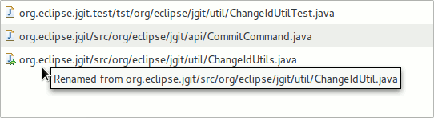

| EGit 3.0 New and Noteworthy |
|
|

|
|
|
GitHub Connector Features |
EGit Features
Rename Detection
Rename detection was added to the file diff viewer in the History view and Commit editor (
bug 335082):

The Git Quick Diff provider also detects renames now (
bug 335081).
Reset to Expression
Allow reset to user-entered commit expression in reset dialog (
bug 352142):

Other
- Show fast forward modes in merge dialog (
bug 397835).
- Consider the ancestor when comparing with remote revisions (
bug 400943).
- Allow users to show server messages while pushing (
bug 398387).
- Share project: Allow "Create Repository" even when a parent directory already contains a repository (
bug 407190).
- Commit dialog: the file section can now be resized by hovering the mouse just above the file section title and dragging the sash up or down, making the message section increase/decrease accordingly (
bug 343712).
- Also show committer if different from author in result dialogs of fetch, pull and push (
bug 363023).
- History view: Adjust column widths and don't show e-mail addresses by default to improve space use
- Improve error reporting for pull failures due to conflicts
- When opening a resource which exists in more than one project (due to nested projects), open it in the most specific project (
bug 404629).
|
|
|
|
|
GitHub Connector Features |